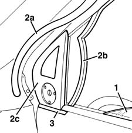
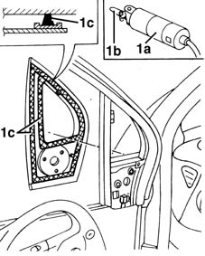
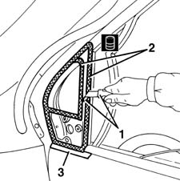
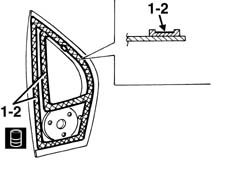
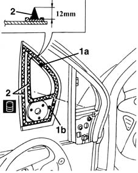
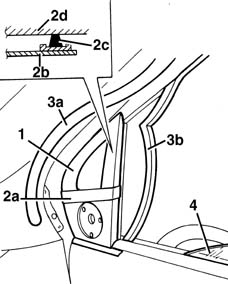

7005D44 front side door fixed window(1), lh or rh (bondedtype) - r r includes cleaning housing
- Path
- Procedures > 70 FITTINGS > 7005 PASSENGER COMPARTMENT FRONT SIDE DOORS > 7005D front side door window glasses > 7005D44 front side door fixed window(1), lh or rh (bondedtype) - r r includes cleaning housing
- Kind
- repair procedure (removal / refitting; the operation number is the code)
- Applies to
- all engines; all production periods
- Interactive page
- https://sloeber94.github.io/elrnDB-fMltpl/en/#/2892039
Applies to: all engines; all production periods
 Removing
Removing
 Refitting
Refitting7005E34 internal or external panel on front side door frame r r
7005R30 electrically controlled door mirror (one) - r+r
1. Lower the window to the limit of its travel.
2. Remove the outer seal (2a) and inner channel (2b) near the quarter glass (2c).
3. Apply adhesive tape to protect the bodywork along the bottom perimeter of the quarter glass.

Applies to: all engines; all production periods
1. Use the vibrating knife (1a) with blade (1b) and cut the beads of sealant (1c) of the quarter glass.
Work first from inside and then from the outside of the door.
The particular shape of the quarter glass will not permit its reuse after removal.

Applies to: all engines; all production periods
Refitting
Removing1. Using a suitable tool, cut and smooth off the bead of sealant in the quarter glass housing, so as to leave a thickness of between 0.25 and 1 mm, without scratching the paintwork.
The sealant left in the housing will act as a backing for the new bond.
2. Clean the seating of the quarter glass carefully using compressed air and degrease thoroughly using heptane. If glueing takes place 60 minutes after cutting and smoothing the bead of sealant, treat the sealant surface with the specific activator and wait 15 minutes before fixing the windscreen.
 | Type | Component | Name | Qty. |
|---|---|---|---|---|
2 | PUR activator | FRONT DOOR FIXED GLASS | - | - |
3. Remove the adhesive tape from the door.
Touch up the paintwork if necessary.

Applies to: all engines; all production periods
Check that the quarter glass is not damaged.
1. Degrease with heptane the surface of the moulded seal to be glued.
2. Apply the activator on the degreased surface.
| Type | Component | Name | Qty. |
|---|---|---|---|---|
2 | PUR activator | FRONT DOOR FIXED GLASS | - | - |

Applies to: all engines; all production periods
Avoid touching the treated area with the hands.
1. Test fit and centre the quarter glass, using the blocks (1a, 1b).
2. Use an air gun to extrude a bead of sealant as evenly as possible along the edges of the quarter glass.
| Type | Component | Name | Qty. |
|---|---|---|---|---|
2 | Window bonding sealant | FRONT DOOR FIXED GLASS | Product n. 71711976 | - |
Begin applying the sealant from the middle of the lower edge and continue without breaks around the entire edge of the window.

Applies to: all engines; all production periods
1. Position the quarter glass in its seating immediately after applying the sealant and bed it into position.
2. Fit the belt (2a) as shown in the figure and tension it so as to apply even pressure over the entire quarter glass, in order to ensure a perfect match between quarter glass (2b), sealant (2c) and door frame (2d).
Wait for the sealant to harden (about one hour) and remove the belt.
3. Fit the outer seal (3a) and inner channel (3b) level with the quarter glass.
4. Raise the window glass up to the limit of its travel.

Applies to: all engines; all production periods
Before refitting the interior components of the car, check that there are no leaks by carrying out a water test, starting from the bottom.
7005R30 electrically controlled door mirror (one) - r+r
7005E34 internal or external panel on front side door frame r r
Topics linked from this page (2)
- 7005E34 internal or external panel on front side door frame r r
- 7005R30 electrically controlled door mirror (one) - r+r